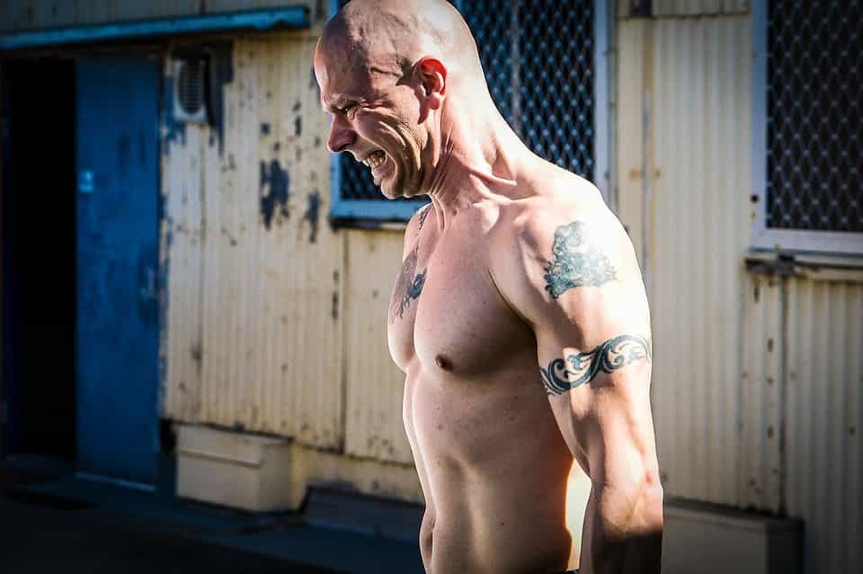

“There is little that can withstand a man who can conquer himself.” – Louis XIV
What is a strong frame? In any social interaction, one person is reacting more than the other. One person needs more approval, validation, and acceptance from the other person than vice versa. Whoever is reacting less has the stronger frame. Whoever has the stronger frame has more leverage and social power.
External factors influence this dynamic. Research has found, for example, that subordinates tend to match the vocal patterns of their superiors, but superiors do not match the vocal patterns of their subordinates.
However, ultimately, a truly strong frame doesn’t rely on titles or external status, it is something you carry with you wherever you are and with whomever you are interacting with.
What A Strong Frame Isn’t
A strong frame isn’t being nice to make a girl like you. It isn’t using lines to appear ‘hard-to-get’ to make her chase you. A strong frame isn’t trying to seem unreactive so that people react to your strong frame.
That last one is especially important. You can’t try to have a strong frame. Affirming, “I have a strong frame,” is really just admitting to yourself that you don’t think your frame is strong enough. Pretending you don’t care is showing that you care too much. You can’t fake a strong frame and you can’t force it. It is unconscious, it is emotional, it is a part of who you are. You either have a strong frame or you don’t.
Is It Pointless To Try To Develop A Strong Frame?
Fuck no. Building a strong frame is one of if not the most important things you can do. But it’s important to know that a weak frame isn’t something you can fix simply by reading theory. It’s something you can only develop through experience. A strong frame is a personal quality that is earned.
The difference between a weak frame and a strong frame is the difference between the veteran CEO and the recent college grad who’s trying to climb the corporate ladder. The difference between a weak frame and a strong frame is the difference between the hardened soldier who’s seen combat time and again and the guy who’s fresh out of training. The difference between a weak frame and a strong frame is the difference between the guy who’s read 10 pickup books but never goes out and the guy who’s been approaching 10 women every single day for months.
Forged By Pain

You develop your frame by putting yourself through social pressure (also known as tension or discomfort), again and again and again. Each time you do this, you come out the other side a little bit more grounded, a little bit less reactive, a little bit stronger.
You go out and meet women to get laid, obviously, but instead of focusing on getting laid on any particular night, you focus on taking the actions that will strengthen your frame. It’s not about the girl, it’s about you and who you are becoming.
This mindset has many advantages. First, going out to get laid can be needy, it’s about getting something external (this way of thinking is often reflective of a weak frame). Instead, going out to build your frame isn’t about taking something. It’s about expressing your masculine energy and becoming a better man. Second, when you go out to strengthen your frame, you’re going to get better results with women, both short-term and long-term.
You develop your frame by straining it, testing it, challenging it. Your frame is a psychological muscle, and to build it up you have to break it down by putting it under pressure. This means that when you go out with the intention of developing your frame you’re going to take very different actions than you would otherwise.
To strengthen your frame, the right action is the action that challenges you and makes you experience a certain level of self-doubt.
If you’re frame is weak enough that you eject from interactions as soon as women indicate a slight hint of disinterest (a lot of guys do this); then your mission is to stay in your interactions and to withstand that discomfort as long as possible. Not because it will help you fuck that particular girl, but because it will make you a stronger person (to be fair, sometimes it does help you fuck that particular girl, too).
If you have trouble opening girls who are in big groups or are with guys, the proper action is to approach those sets because your fear is a reflection of a crack in your frame. Your frame is weak wherever there is fear, and by intentionally leaning into situations that trigger your fear, you will conquer the weaknesses in your frame.
The exact implications of this approach to game are determined by your level of experience. At a beginner level, you might strengthen your frame by going out every day (instead of just watching videos of other guys picking up girls). If you’re an intermediate you can develop your frame by trying to close every girl you talk to; you might try to pull every girl you meet or you might try to get every girl’s number (even when a girl clearly isn’t that into you). If you’re legitimately advanced you might develop your frame by approaching and trying to pull every single nine and ten that you see while you’re out.
The Paradox Of Outcome-focus
The irony here is that when you go out and your main agenda is to pull a girl you are actually much less likely to pull than if you go out to strengthen your frame. This is because when you go out with an agenda to pull a girl it’s hard not to go on defense.
When you’re talking to a girl that you’ve decided you should pull, it’s easy to hold back and play it safe. For example, you might not say things that are polarizing, you might avoid physicality, or you might hesitate to lead because those actions risk ‘losing’. Taking risks might fuck up your opportunity with that particular girl. Going on defense is one of the worst things you can do when it comes to picking up girls.
Girls want a guy who’s on offense. They want the guy who does take risks, the guy who does try to pull her, the guy who asserts himself unapologetically as a man. It just so happens that the actions that put you on offense are the same actions you must take to strengthen your frame.
Common Sense
Confucius say, “Don’t be an idiot.”
There’s an important nuance here that some guys misunderstand. Building a strong frame doesn’t mean being intentionally uncalibrated in an antagonistic way to show how free from outcome you are. I’ve seen this, guys who define having a strong frame as purposely ignoring how a girl feels. If you’re scaring girls or making them afraid that you’re going to hurt them, they’re not going to fall into your frame.
This antagonistic approach is a form of trying way too hard, which is actually a symptom of a weak frame. It’s putting on a ‘tough guy’ mask to prove how little you care about getting rejected. If every girl you talk to is uncomfortable, you’re trying too hard to have a strong frame. Getting rejected on purpose (whether consciously or unconsciously) is not going to strengthen your frame. There’s a certain level of common-sense and calibration that needs to be taken into consideration here.
Conclusion
Each time you challenge yourself by intentionally facing social pressure and barreling through discomfort you are taking an important step towards developing a rock-solid frame that will make you attractive to most women in an immediate and visceral way. Women can feel a genuinely strong frame, it literally turns them on.
Not only will women be more attracted to you when you have a strong frame, but you will also be less likely to self-sabotage your interactions. The stronger your frame, the less you care about rejection, and therefore, the more likely you are to take the risks that will get the girl, and the next one.
Read More: The Battle To Maintain Frame Control